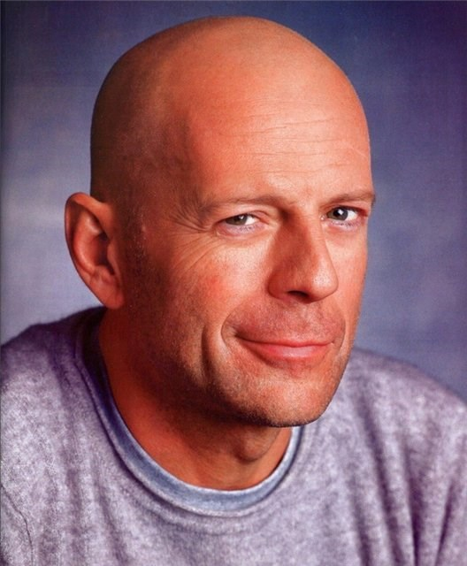

Американский актер
Описание:
Брюс Уи́ллис Уо́лтер (англ. Walter Bruce Willis, род. 19 марта 1955, Идар-Оберштайн, Рейнланд-Пфальц, ФРГ) — американский актёр, продюсер и музыкант. Был одним из самых высокооплачиваемых актёров Голливуда. Наибольшую известность получил благодаря роли полицейского Джона Макклейна в серии фильмов «Крепкий орешек». Уиллис чаще всего выступал в роли героя боевика, однако нередко выходил за рамки этого амплуа.
Лучшие фильмы:
- «Смерть ей к лицу» (1992)
- «Криминальное чтиво» (1994)
- «12 обезьян» (1995)
- «Пятый элемент» (1997)
- «Армагеддон» (1998)
- «Шестое чувство» (1999)